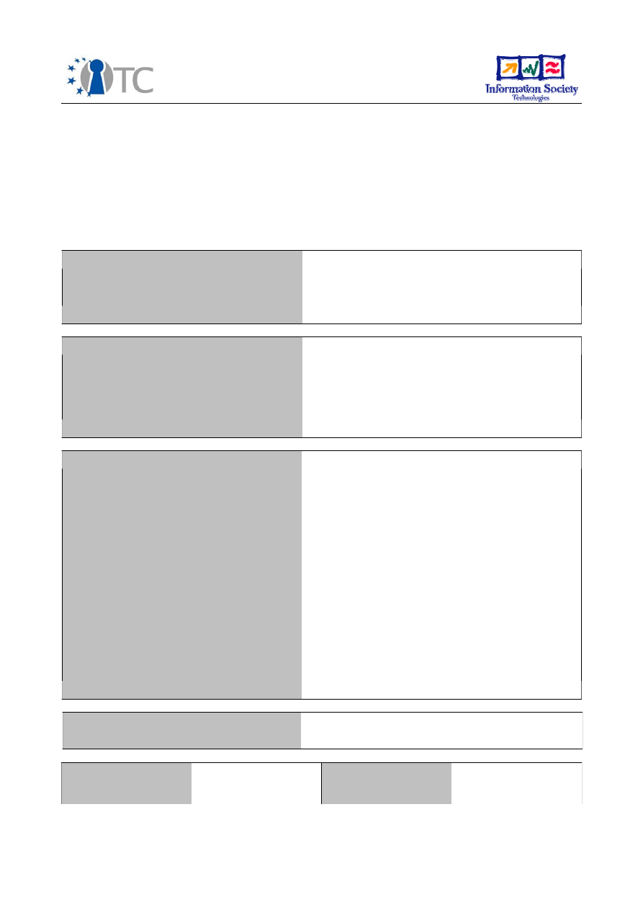
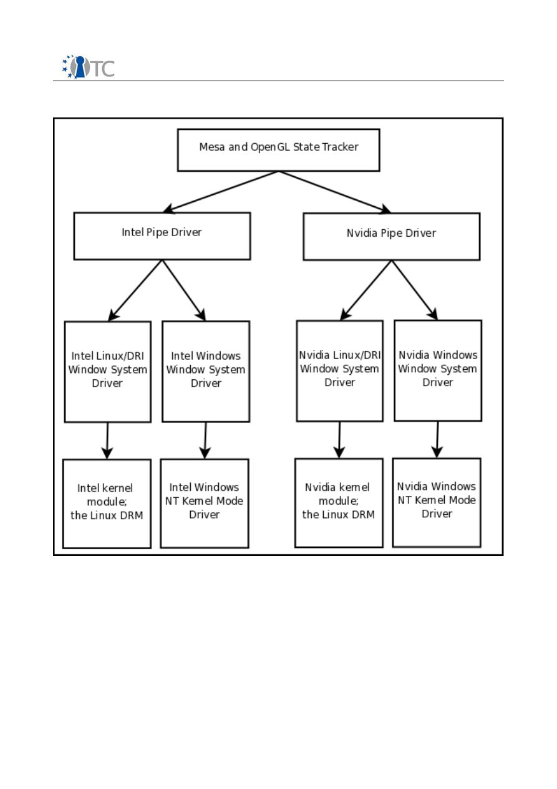
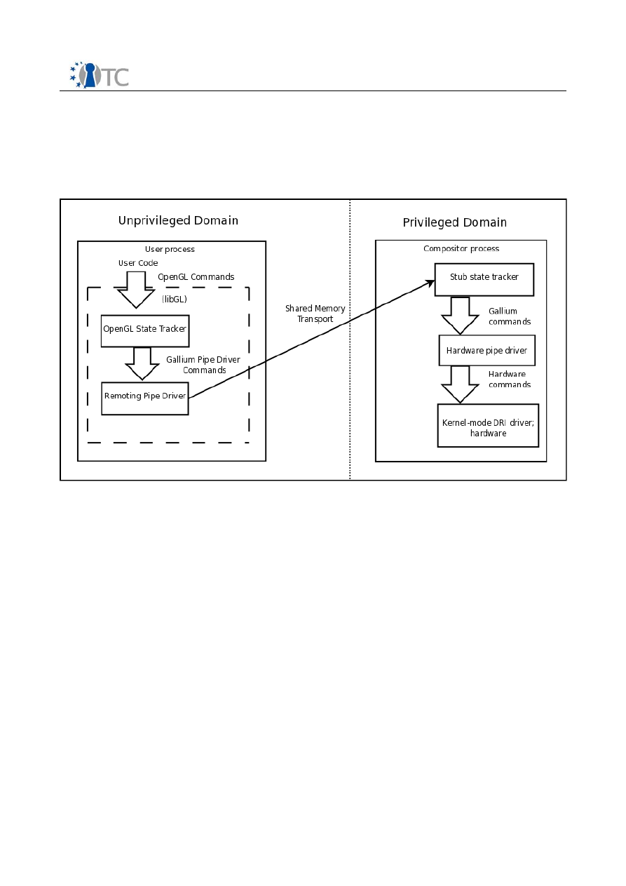

Voluntary Deliverable D04.8
Secure Multiplexing of Accelerated 3D Content
Project number
IST-027635
Project acronym
Open_TC
Project title
Open Trusted Computing
Deliverable type
Report, Prototype
Deliverable reference number
IST-027635/D04.8/FINAL|1.0
Deliverable title
Secure Multiplexing of Accelerated 3D
Content
WP contributing to the deliverable
WP04
Due date
April 2009 (M42)
Actual submission date
29 May 2009
Responsible Organisation
CUCL
Authors
CUCL (Chris Smowton)
Abstract
In this report a new approach to API remoting
for GPU virtualisation is described which aims
to reduce the amount of trusted code
involved in 3D rendering for guest VMs. To
achieve this it uses a modular driver
framework to export large proportions of
complex 3D graphics drivers into the guest's
domain. It further provides a secure
graphical user interface to untrusted
domains. The implementation of Xen3D is
described, which remotes the Gallium
graphics driver model, a system designed for
the creation of highly modular graphics
drivers, and serves as a proof of concept.
Keywords
WP4, Xen, 3D, graphics
Dissemination level
Public
Revision
FINAL|1.0
Instrument
IP
Start date of the
project
1
st
November 2005
Thematic Priority
IST
Duration
42 months

Secure Multiplexing of Accelerated 3D Content
FINAL|1.0
Table of Contents
1 Foreword....................................................................................................................3
2 Introduction ..............................................................................................................3
2.1 Summary of work done..........................................................................................4
3 Aims of secure graphics virtualisation.......................................................................5
3.1 Security and Isolation.............................................................................................5
3.2 Secure Interaction..................................................................................................6
3.3 Generality...............................................................................................................6
3.4 Performance...........................................................................................................7
4 Xen3D: A 3D Graphical Remoting and Composition System......................................7
4.1 Introduction to Gallium...........................................................................................8
4.2 Xen3D Architectural Overview...............................................................................9
4.3 Marshalling Pipe Commands................................................................................10
4.4 Detailed Implementation......................................................................................10
5 Discussion and Lessons Learned..............................................................................12
5.1 Security and Trusted Code...................................................................................12
5.2 Generality and Portability.....................................................................................14
5.3 Suitability of Gallium for Remoting.......................................................................15
5.4 Future Directions..................................................................................................16
5.5 Improving Gallium................................................................................................16
6 Conclusion...............................................................................................................17
Open_TC Deliverable D04.8
2/17

Secure Multiplexing of Accelerated 3D Content
FINAL|1.0
1
Foreword
This deliverable was not originally planned in the contract but was introduced by work
package 4 to capture some of the technical work that has been performed during the
last 18 months of the project. The work on high performance and secure graphic
virtualisation was indeed introduced during the last period as a challenging research
area, critical to demonstrate the usability and user experience of a trusted virtualised
platform. While addressing the technical challenges of such a research project, work
package 4 (and CUCL in particular) produced a significant amount of software in the
form of a prototype which would not have been captured by any other deliverable.
This was our motivation to introduce this new deliverable which details both the
research done for high performance and secure graphic virtualisation and the software
components that have been developed. The software packages described in this
document will be delivered to the European Commission as part of the overall
software packages produced by the whole project and currently hosted on the OpenTC
versioning servers. All the software components described in this document have been
released under an open source license by CUCL.
2
Introduction
Virtual machines (VMs) have, since their resurgence as a concept at the beginning of
the decade, primarily seen use in server applications. However, as the typical amount
of memory fitted to workstations and desktop computers has risen, so has the
practicality of using a virtual machine monitor (VMM) to run multiple virtual machines
on the desktop. This may serve to provide fault isolation for important applications (for
example, to run a secure VPN connection out of a different VM to that which is used
for web browsing, and so which is vulnerable to malware infection), to provide a
sandbox environment for developers, or to permit the concurrent use of multiple
operating systems.
Because the earlier use cases were primarily server-oriented, VMMs and operating
systems targeting a VMM tended to focus on the efficient virtualisation of disk and
network I/O. However, they neglected devices such as sound and graphics hardware
which are of little use in the server room, but are crucial on the desktop.
Virtualisation of graphics hardware to provide high fidelity, security and performance
is challenging. This is principally due to the highly complex nature of graphics
hardware compared to, for example, networking hardware. Graphics hardware can be
programmed to perform complex tasks, and the languages used by programmers are
correspondingly highly expressive and complex. Software providing a virtual GPU must
therefore either emulate complex hardware, or remote a complex API.
Recently, several commercial products and academic projects have endeavoured to
provide full 3D acceleration; many different pieces of software provide support for
various combinations of host operating system, guest operating system, and graphics
API. In most cases these have used API remoting techniques, which has meant running
a complete graphics driver in the VMM's trusted domain, significantly inflating the
trusted computing base. This naturally introduces the risk that a bug in this new
trusted code may break isolation between virtual machines, perhaps to the point of
causing the entire physical machine to fail.
Open_TC Deliverable D04.8
3/17

Secure Multiplexing of Accelerated 3D Content
FINAL|1.0
Projects also exist which attempt to provide a secure graphical user interface: an
environment in which graphical programs may be interacted with whilst remaining
isolated from one another such that they may not eavesdrop on input events or
observe or manipulate the display of another.
This report describes the design and implementation of a system which aims to
combine and improve on these in providing a secure GUI to guest VMs with support for
hardware 3D rendering. It aims to ameliorate the security issues of previous systems
by moving more 3D driver code out of the trusted domain and into the guests.
2.1 Summary of work done
•
Developed an OpenGL driver for installation in guest virtual machines which provides
remoting of rendering operations using the Gallium pipe driver layer as a remoting
point
•
Developed compositing software which accelerates rendering of those rendering
operations
•
Modified the XenLinux kernel to provide support for accelerated rendering
•
Developed an architecture for secure VM-switching by the user of the compositor
software making use a trusted domain displaying all trusted user interface.
Open_TC Deliverable D04.8
4/17

Secure Multiplexing of Accelerated 3D Content
FINAL|1.0
3
Aims of secure graphics virtualisation
The following four aims are necessary properties of software providing 3D graphics
virtualisation:
•
To guarantee isolation between clients, a vital feature as a common use case for
virtual machines is to isolate potentially dangerous or buggy software,
•
To take measures against guests impersonating one another, such that the user may
always be confident that they are interacting with the VM they wish to (a vital property
because preventing VMs from interfering with one another is pointless if they can
simply masquerade as another),
•
To produce a system as general across APIs, operating systems and VMMs as
possible, as this will reduce the volume of trusted code required to support a range of
situations, and
•
To attain efficiency in spite of these constraints, as the system is useless if it cannot
beat software rendering by guests followed by bitmap copying.
All previous solutions share the common element of dividing the graphics rendering
pipeline into two stages: an untrusted element, which runs in the guest's context and
which cannot violate VM fault isolation, and a trusted element which runs in the host's,
or trusted domain's context. This trusted code has direct access to the graphics
hardware, and may, due to a bug or malicious addition, permit guests to break
isolation, either subverting the host or impersonating another guest. It is therefore in
the interests of security that as little code as possible should be trusted, and that that
which is trusted should be rigorously reviewed and tested.
3.1 Security and Isolation
Our first aim was to provide secure multiplexing of the graphics hardware fitted to the
host, such that, in common with other VMM multiplexers (such as those concerning
network and block devices), clients would be both unable to deny service to other
clients, and unable to cause faults in other clients. Specifically we aim to preserve
confidentiality, in that no untrusted VM should be able to discover what another is
drawing, integrity, in that no VM's drawing may be modified by another, and
availability, in that failures of VMs engaged in 3D drawing should not affect others, as
well as no graphics commands being able to deny others the ability to draw.
The threat model which must be dealt with is one in which software running in
untrusted VMs may attempt to violate any of the above constraints by delivering
potentially malformed drawing commands, either to exploit the intended behaviour of
the remoting software or graphics hardware, or else in the hope of discovering and
exploiting an error.
Because local users are already able to run multiple 3D applications concurrently,
drivers are required to securely multiplex the hardware, which may not be capable of
managing multiple rendering contexts in hardware. By representing remote clients as
though they are local clients, this existing ability can be used to provide isolation
between VMs, albeit isolation which is weaker than inter-VM isolation. This utilisation
of the host's pre-existing ability to isolate clients is common to other API-remoting
solutions.
Open_TC Deliverable D04.8
5/17

Secure Multiplexing of Accelerated 3D Content
FINAL|1.0
More important is the ability to trust that code which is running in the trusted domain,
and therefore could, through a bug or malicious addition, break inter-VM isolation. To
this ends we aimed to minimise the amount of code running in the trusted domain,
such that this code might be of practical size for hand inspection and verification. A
further aim was to maximise the generality of the trusted code, such that the system
could be adapted to different operating systems, graphics APIs and graphics hardware
without major alteration to the trusted code, and therefore need for re-verification.
This generality might also serve to improve the reliability of the trusted code: because
these sections of code would be used by all of the system's users, regardless of their
specific graphics hardware, the code would receive heavy exposure and testing,
making the discovery of bugs more likely.
Finally, wherever we divided the graphics stack into trusted and untrusted elements, it
would be necessary to verify each call into trusted code in order to ensure that the call
did not attempt to access resources belonging to another VM. We aimed to divide it in
such a manner that verification of the admissibility of calls into the trusted code is
easy and efficient, as this would serve to make the remoting code simple and
therefore easy to check for bugs, as well as minimising the performance penalty
incurred through remoting.
3.2 Secure Interaction
Whilst the above measures make it less likely for a client to subvert the host or other
guests to a software error in the graphics driver, they do not prevent guests from
attempting to deceive the user into believing they are interacting with a different
guest. To this end, it was a further aim to provide the user with a secure means of
choosing which VM they wish to interact with, and determining which VM they are
currently interacting with.
By providing a secure attention sequence which is recognised by host software but not
forwarded to any VM, and which always immediately shows only the display of a
nominated trusted VM, users can be guaranteed the ability to gain access to a known
machine. By delegating to only that trusted VM the right to select another VM for
viewing, users can be assured that, assuming the host or trusted VM was not itself
already subverted, they are indeed at all times interacting with the VM they intend to.
In order to guarantee that this security is provided, it is necessary to ensure a secure
I/O path from the user's physical I/O devices to the host's control software and the
trusted VM.
3.3 Generality
As mentioned above, providing a means of virtualisation which includes maximally
flexible trusted elements (i.e. one which is portable between host operating systems,
guest operating systems and graphics APIs without significant alteration of those
trusted elements) would be beneficial from a security point of view; however, that is
not the only advantage of such a solution.
We aimed to divide the graphics driver into two elements: a hardware-independent
Open_TC Deliverable D04.8
6/17

Secure Multiplexing of Accelerated 3D Content
FINAL|1.0
element running in the guest, and a hardware-dependent but graphics API-
independent element running in the trusted domain. This approach to modularisation
means that the hardware-independent aspects of driver development effort can be
shared between drivers. Therefore, all drivers could benefit directly from that shared
effort and so rapidly gain support for new API revisions, or entirely new APIs; by
comparison, previous remoting solutions which are bound to a specific API will be less
able to take advantage of shared code to support new revisions of those interfaces.
This means that as well as providing a smaller trusted codebase than other
approaches, such a modular solution is likely to adapt to new developments faster.
Given, for example, the marked departure of Direct3D 10 from its predecessor, this
ability to adapt seems likely to be a very practical advantage.
3.4 Performance
Our final aim was to provide a virtualisation solution with performance comparable to
3D accelerated applications running directly on the host. In order to achieve this it is
necessary to maximise command batching, which in turn means avoiding tight
synchronisation between VMs.
This aim may also go hand in hand with that of achieving security: if the graphics
stack is divided in such a manner as to make the marshalling and validation of calls
into the trusted portion easy and simple, this process will be both faster and easier to
verify than more difficult marshalling code.
4
Xen3D: A 3D Graphical Remoting and Composition System
We implemented Xen3D, a set of virtual graphics drivers to run on guest VMs coupled
with a compositor application run on the host system.
The system as currently implemented supports Linux guests running Xorg and a Linux
host running any X server. It depends on the Xen hypervisor, because it uses Xen-
specific shared memory mechanisms for interdomain communication, but is otherwise
hypervisor-independent. It currently only supports the OpenGL graphics API.
In our implementation we make use of Tungsten Graphics' Gallium3D driver
architecture to facilitate the separation of drivers into untrusted and trusted
components, without producing a system too hardware-specific to be easily adapted.
Open_TC Deliverable D04.8
7/17

Secure Multiplexing of Accelerated 3D Content
FINAL|1.0
4.1 Introduction to Gallium
Gallium is a driver architecture developed by Tungsten Graphics which is ordinarily
utilised as a labour-saving device for developers of ordinary, non-virtualised graphics
drivers. It saves work by dividing graphics drivers into three modular layers: a State
Tracker, which implements a graphics API and is hardware-independent, a Pipe Driver
which is hardware dependent, API-independent and operating system independent,
and a Window System Driver which is API-independent, hardware dependent and
operating system dependent. This modular architecture permits multiple drivers to
share state tracker modules, with each driver author contributing only a single pipe
driver and a window system module per OS to be supported.
Open_TC Deliverable D04.8
8/17
Illustration 1: Possible linkages of Gallium components: the state tracker at the top, OS-
independent pipe drivers in the middle row, and OS-dependent components below

Secure Multiplexing of Accelerated 3D Content
FINAL|1.0
Illustration 1 illustrates possible ways in which these modules can be linked to produce
a complete graphics driver.
4.2 Xen3D Architectural Overview
API remoting techniques, as employed by most of the previous work described in
Section 2, suffer from generally featuring a large proportion of code running on the
host, and thus being trusted. This is because, in the simplest case, they simply forward
each user call to a graphics API in the manner of a remote procedure call; all
processing logic is executed in the trusted domain. This approach is also inflexible: if it
is desired to support more than one graphics API (for instance, OpenGL and Direct3D),
either a separate renderer must be run in the trusted domain for each, further
increasing the volume of trusted code, or else a translation layer must convert
commands into those of a different graphics API, introducing less trusted code but
incurring a performance penalty.
Xen3D differs from previous API-remoting software in that it performs remoting at the
interface between the state tracker and pipe driver components of a Gallium driver, a
situation illustrated in Figure 2. While the pipe driver remains in the trusted domain,
its code size is significantly reduced compared to a monolithic graphics driver, making
it easier to verify. Further, because this element of the graphics driver is common to
all graphics APIs it is likely to attract more testing and review than a similar API-
specific driver simply due to higher usage.
Xen3D also maintains desirable properties of previous solutions, including high
performance, and the ability to run unmodified guest applications.
Open_TC Deliverable D04.8
9/17
Illustration 2: Simplified overview of Xen3D

Secure Multiplexing of Accelerated 3D Content
FINAL|1.0
The system as implemented comprises two parts. Firstly, a Gallium-specific libGL,
which is linked to unmodified 3D applications running on the guest and which includes
the OpenGL state tracker coupled with remoting code. Secondly, a compositor
application run on the host, which executes remoted commands as though on behalf
of a local process.
Drawing commands received by the Pipe and Window System layers of the guest GL
drivers are relayed to the compositor for drawing using a pair of simple shared
memory ring-buffers. These buffers are directly accessible to both client application
and compositor, and so, similarly to the VMWare Virtual GPU's command FIFOs, permit
zero-copy command forwarding and batching.
Unlike the Virtual GPU, shared memory is not currently used for textures and vertex
buffers; however this feature is planned for the future.
4.3 Marshalling Pipe Commands
The arguments to pipe commands are marshalled and forwarded over the shared
memory transport unaltered, with a number of exceptions:
•
Textures, surfaces and vertex buffers are persistent in-memory objects which the
pipe driver interface expects to refer to by pointers. These are marshalled into safe
handles by the guest and unmarshalled into local pointers by the compositor. The
tables of safe handles are rendering-context specific; contexts are themselves referred
to by safe handles, which are held in a process-specific table. Therefore a malicious
process cannot impersonate any other and gain access to is resources.
•
Certain arguments, such as strides describing the row-length of a texture, act as
implied pointers into a surface. These are checked by the compositor to ensure that
they do not point outside the referenced surface.
•
Vertex and pixel shader programs are expressed as TGSI, Gallium3D's assembly-like
shader language. This language is Turing powerful; naturally the guest cannot check
supplied programs to determine whether they halt. The Gallium pipe driver interface
provides no means to interrupt processing, so the responsibility must fall to the
graphics driver running in the trusted domain to determine when a shader program
has run for an intolerably long time and abort processing.
4.4 Detailed Implementation
Interposition of the guest's remoting code on pipe driver calls is kept to a minimum;
however it does intervene to ensure safety as described above. It also caches local
copies of textures, render targets and vertex buffers to prevent unnecessary copying.
This takes care of the task of relaying the 3D content drawn by applications running
on this guest; however, typically the guest will be drawing 3D content which is
associated with a window, and which is layered on screen with respect to other
windows containing both 2D and 3D content. To this ends, the guests must also run an
extension to their X servers.
Open_TC Deliverable D04.8
10/17

Secure Multiplexing of Accelerated 3D Content
FINAL|1.0
2D content drawn by this guest must then be integrated with the output of 3D clients
to produce a complete display; this is achieved using Xen's existing paravirtualised
framebuffer device and a minor modification to the Qemu device model process which
runs in Domain 0 and manages the framebuffer.
The compositor, which runs on the host, is then responsible for accepting connections
from guests' 3D clients, Xorg extensions, and instances of the Qemu device model and
synthesising these different inputs to create a coherent display corresponding to each
guest, as well as allowing the user to navigate amongst the displays of different VMs.
In response to 3D client commands, the compositor acts as though each is a 3D
application running on the local system. It harnesses the Pipe Driver and Window
System Driver components of a Gallium driver for the local graphics card, and creates
a rendering context corresponding to each remote rendering context. It then executes
drawing commands in the appropriate context as it services each remote client in a
round robin fashion. By retaining control of these context switches, the compositor is
able to prevent guest applications from modifying the state of other contexts and
therefore breaking isolation.
All rendering by clients is redirected to offscreen surfaces pending composition. This
means that guests' rendering does not need to be bounds-checked by the compositor
in order to prevent the possibility of a guest drawing on areas of screen belonging to
another and thus impersonating that guest to the user. By comparison if it were
permitted to draw direct to the screen (or the compositor's window, if it is running in a
windowed environment,) every draw would need to be checked to ensure that it did
not write outside its ‘owned’ area. Of course, the graphics driver must ensure its own
memory integrity somehow, either by explicit bounds checking or otherwise; this
simply avoids having to ‘double check’ both at the application layer and in the driver.
Clipping information and 2D content from the guests' Xorg extensions and Qemu
instances is then used to reconstruct the guest's desktop from these offscreen
surfaces as it would have been drawn locally.
The compositor uses the EGL API for management of local rendering contexts, rather
than the X-specific GLX API ordinarily used for this purpose. As EGL can be
implemented by a graphics driver which draws directly to the local framebuffer rather
than into an X window, in the presence of such a driver the compositor can run
without a windowing system, and therefore there is no need to run Xorg or any other X
server in the trusted domain. This again reduces the quantity of code which must be
trusted to permit guests access to hardware 3D rendering.
The compositor also performs all forwarding of input events to VMs; only a single VM is
active for input or output at any given time, in order to guard against VMs attempting
to eavesdrop on one another, and the compositor recognises a secure attention
sequence which is not passed on to any guest. In response to this sequence the
compositor will switch to a nominated, trusted VM, which is then able to provide an
interface for selecting which VM the user wishes to interact with. Because under Xen
no VM can usurp the domain-ID of another, and no VM can intercept the secure
attention sequence, there is no way for a VM to convincingly masquerade as another.
Open_TC Deliverable D04.8
11/17

Secure Multiplexing of Accelerated 3D Content
FINAL|1.0
5
Discussion and Lessons Learned
This system as currently implemented has achieved its main goals:
•
VM isolation is threatened less than when using previous systems, because less of
the graphics driver code runs trusted and so presents a target for exploits.
•
By remoting Gallium's pipe driver interface, Xen3D maintains independence from
OpenGL or any other graphics API.
•
By controlling the host graphics driver using EGL, independence from a host
windowing system (or indeed the need to use one at all) is also maintained.
•
The system performs well as far as it can be measured at present. Only software
drivers are currently compatible with Xen, but these drivers achieve framerates for
tests such as glxgears and Open Arena almost equal to their performance without
remoting
It is, however, certainly possible to improve further. This section will discuss in more
detail the goals achieved, and how they could be bettered.
5.1 Security and Trusted Code
As mentioned above, one key aim of this work was to achieve highly general 3D
graphics remoting with a minimum of code being trusted. This goal is partially
achieved: Gallium's only current state tracker implements OpenGL, and is
implemented by over 150,000 lines of code (The code referenced actually includes
over 1,000,000 lines, but we assume conservatively that none of the code
implementing software execution of shader programs or fixed-function lighting is
used, being entirely replaced by Gallium). By comparison, a sample hardware driver
for Intel's 915 graphics chipset features 80,000 lines of code, and of these, 60,000 are
Gallium support libraries common to all drivers. Thus, running the state tracker
element in the guest domain and remoting at the interface between tracker and pipe
driver moves a large majority of the driver code out of the trusted domain. What's
more, as Gallium3D approaches maturity it will acquire state-tracker modules for
graphics APIs such as Direct3D 9 and 10, as well as window-system driver adaptations
to suit their respective means of controlling drawing context. Since the state tracker,
which runs untrusted, is likely to be large, whilst the windowing-system dependent
elements of the sample Intel 915 driver, running trusted, constitute just 8,000 lines of
code, a very large proportion of new code is likely to run in the untrusted domain.
Division of the graphics driver using Gallium is also likely to increase the reliability of
that code which is trusted. Because a significant majority of the trusted code is shared
by all graphics drivers, it will be used and tested by a very large user base. Even of
that code which is Intel-specific, the majority (all but those 8000 lines) is shared by all
operating systems and graphics APIs, and thus will be tested by Intel users running 3D
applications in practically any situation.
Dividing at the state tracker / pipe driver layer also provides a remoting interface
which is both thin in terms of number of exposed methods, and whose calls are easy
to verify for safety. This may reduce the chances of a bug in the remoting code itself
undermining security.
Open_TC Deliverable D04.8
12/17

Secure Multiplexing of Accelerated 3D Content
FINAL|1.0
On the down side, while it is true that the entirety of Mesa3D and its OpenGL state
tracker have been moved out into the guest domain, 80,000 lines of code remain
trusted, a figure which is comparable in size to the Xen hypervisor (estimated for
version 3.3 at 150,000 lines). Therefore it is probably reasonable to say that providing
3D graphics for guest VMs still inflates the trusted codebase significantly, even if the
problem is reduced compared to straightforward OpenGL remoting.
A further problem is that the removed code consists of the implementation of the high-
level semantics of OpenGL's state model, making heavy use of safe integer handles,
whereas the code which remains trusted is involved with direct hardware access and
command synthesis using raw pointers, as well as interacting directly with the
operating system kernel. Therefore the code which has been exported to the guest
domain could in some sense be said to be more ‘benign’ than that which remains.
Errors in the high-level OpenGL code are likely to crash the local process; errors in the
low-level hardware access code are likely to crash the graphics card itself, or worse to
cause the card to write arbitrary physical memory; either of these is liable to bring
down the host system, VMs and all.
To a degree this issue could be ameliorated by moving yet more code from the trusted
domain into the guest, with the two exchanging lower and lower level commands, and
the operands to these commands being indirected by the host such that buggy guest
software cannot address objects which do not exist, or have been freed. The primary
problem with this approach is a practical one: the low-level commands used by
graphics cards are difficult to check for safety, vary widely from manufacturer to
manufacturer, and have evolved swiftly over time. One might well produce a remoting
solution which permitted guests to deal with, for example, a specific Intel graphics
chipset, and which removed all but a few thousands lines of code to the guests.
However, another solution would be required for ATI graphics hardware, still another
for Nvidia hardware, and in all probability the Intel solution would need adapting and
rewriting not far into the future as another generation of hardware defined another
new command-set. This is similar to the current situation with ordinary, local graphics
drivers; asking that graphics hardware vendors should develop both a local driver and
a remoting solution for each of their cards seems hopeful at best.
By comparison, remoting OpenGL has been attractive as the API is relatively stable;
although it has certainly grown since it was originally defined, this change has been
very slow compared to the evolution of hardware, and so a GL remoting solution is
likely to remain useful for years to come. In this way the remoting of Gallium3D takes
advantage of a change in what is practical: as the pipe driver interface is envisaged to
remain stable in the manner of OpenGL, and Gallium drivers can be remoted to
without modification, removing the burden from hardware vendors, Gallium remoting
shares the advantages of OpenGL (or Direct3D) remoting whilst doing so at a level
sufficiently closer to the hardware to permit significant simplification of the host-side
driver.
One possible long-term solution to this problem might be to define an interface still
closer to the hardware than the Gallium pipe driver interface, and remote that. This
interface would necessarily include a means to serialize and deliver manufacturer and
model-specific commands; the host's element of the driver would then simply be
responsible for checking the safety of commands where appropriate and translating
Open_TC Deliverable D04.8
13/17

Secure Multiplexing of Accelerated 3D Content
FINAL|1.0
guest pointers or handles into machine pointers (a task which could also be
accomplished using a memory management unit-like scheme in which guests deal
with a virtual address space which is mapped in hardware onto physical video
memory). If this interface were designed such that execution in a non-virtualised
environment were equivalent or very similar to a single virtual machine running under
a hypervisor, and the remoting layer were sufficiently general, then the extra burden
on graphics hardware developers could be minimised. This would almost completely
eliminate trusted code, leaving only graphics memory management and the
marshalling and remoting layer running in the trusted domain.
This scheme could be taken to its logical limit by permitting each guest VM to access
the hardware directly in ‘user mode,’ analogous to running a program on a CPU in
user-mode in which certain registers and processor features are inviolate. The
hypervisor or trusted domain's role would then be limited to configuring the graphics
card's memory management hardware appropriately before yielding control to a
guest, similar to most operating system kernels' role in memory management and
secure multiplexing of the CPU for user processes. This would also mean a large
performance gain, as no remoting at all would be required apart from a domain-switch
to configure the card's MMU. The PCI-SIG's Single Root I/O Virtualisation standard may
provide hardware suited to such designs; network devices which similarly expose
multiple interfaces for direct use by virtual machines already exist.
5.2 Generality and Portability
Another goal of this project was to produce a system easily adaptable to different
graphics APIs, guest and host operating systems, and hypervisors.
Remoting a different graphics API would be trivial, given the existence of a state
tracker. Linking the GL state tracker with our client graphics drivers required no
modification to the state tracker at all, so we have no reason to believe that any would
be required to link with a different state tracker and therefore permit guests'
applications to use and accelerate, for example, Direct3D 9. The current Window
System Driver running on clients is based on Tungsten Graphics' stock Xlib/GLX driver,
and required only 21 additional lines of code which were GLX-specific, all relating to
reporting window creation and destruction to the Xorg extension. Therefore similar
modifications to another template window system should be simple.
Remoting the 3D drawing of a guest running a different operating system would
require some work, but not a prohibitively large amount. The current OpenGL guest
driver could be ported to run on Windows, for example, by reimplementing the ring
buffer mechanisms to use Xen's means of exposing its shared memory capabilities to
Windows guests, substituting the GLX integration of the current Window System driver
for similar WGL integration, and replacing the Xorg extension with a similar
mechanism for extracting window coordinates and clipping information from Windows'
graphics subsystem.
Running the compositor on a different operating system would be easy: the
compositor as implemented interacts with its graphics driver using only the Pipe Driver
interface, which is invariant across operating systems, and the EGL API for creating
and managing rendering contexts, which is both cross-platform and graphics API
Open_TC Deliverable D04.8
14/17

Secure Multiplexing of Accelerated 3D Content
FINAL|1.0
independent. It could therefore be easily integrated with a different graphics driver
supporting EGL running on any operating system.
Running on a VMM other than Xen would naturally require replacement of the shared
memory transport, which currently uses Xen's mechanisms for shared memory
segment setup and teardown; however, conversion from the TCP-based transport used
during early development to the current shared memory transport took only around
two weeks for a single person with no prior knowledge of Xen's mechanisms for inter-
domain communication, so again the prospects for an easy port look promising.
5.3 Suitability of Gallium for Remoting
To the best of our knowledge, Xen3D represents the first attempt to remote 3D
drawing operations at an API-neutral layer. VMWare's solution is the sole example that
does not perform straight-forward API remoting, but what it remotes is closely related
to Direct3D.
The use of a common remoting language offers many advantages. Firstly, as Gallium-
based graphics drivers must always convert from the graphics API exposed to
programmers to that exposed by the pipe driver, performing that conversion in a
separate VM to the actual rendering does not introduce any additional work above the
remoting overhead. This improves over any use of a conversion layer (such as GL to
Direct3D), which would introduce a redundant API conversion, as may be taking place
in Parallels' system.
Unfortunately however, whilst the OpenGL API was designed from the outset for
remoting of drawing operations, being aimed at thin client setups, the Gallium Pipe
Driver interface was not. The underlying assumption that dispatches to pipe driver
functions would occur by simple local function calls are made evident in places: for
one, pipe drivers do not support the OpenGL concept of display lists. These lists
comprise sets of drawing commands which can be saved and replayed at a later date;
this is particularly useful when the originator of the commands and the renderer are
not collocated, as the list can be stored local to the renderer, and the command to
invoke that list is very brief indeed. This helps to avoid the network becoming a
bottleneck. Because Pipe Drivers do not have this capability, the OpenGL state tracker
itself saves and ‘plays back’ these lists; to the pipe driver the situation looks just as if
the complete command stream were reissued. When remoting at the state tracker /
pipe driver interface, then, a complete copy of the list's representation as Gallium
drawing commands will be transmitted on each list invocation. This may introduce the
transport as a bottleneck.
Further, the pipe driver interface includes several functions with return values which
may affect control flow in the state tracker, from which it is now remote; most
critically the core “draw arrays” function, which instructs the pipe driver to draw a set
of vertices, has a boolean return which indicates whether drawing was successful. The
only current state tracker mercifully ignores these return values, and so we are able to
avoid the need to wait for the renderer to return on every draw command; however
future state trackers are liable to use this return, which might render Gallium unviable
as a tool for remoting.
Open_TC Deliverable D04.8
15/17

Secure Multiplexing of Accelerated 3D Content
FINAL|1.0
5.4 Future Directions
One key difference between graphics remoting between VMs and between physically
separate machines is the ability to make use of shared memory. The Gallium
architecture provides functions allowing both textures and vertex buffers to be loaded
or referenced from user memory, which could be used to avoid copying when a guest
wishes to load textures and vertex data which it has generated or loaded from disk.
This would also permit the guest to modify these textures and vertex buffers in-place,
again avoiding copying. This would also remove a cause of synchronisation: whereas
presently upon mapping a texture for local reading one must wait for the renderer VM
to deliver a copy, a shared memory version would be available immediately, perhaps
avoiding the need to flush drawing commands if it is known not to have changed.
Synchronisation may be required regardless, however, if preceding drawing
commands may modify that texture.
The compositor's system of rendering guest 3D content to off-screen textures which
are then drawn to screen could also be applied to accelerating 2D windowing for
guests. User experience could be improved by performing window composition using
host hardware. This could be directly implemented by modifying the X servers of the
guest, or an OpenGL-based X Server such as Xgl could be used.
In order to provide better isolation of guests, a quota system preventing excessive use
of, for example, texture memory will be implemented. This will involve interposing on
texture and buffer allocation methods in order to store these in main memory and load
when appropriate. Quotas may also be applied in time; whereas currently the system
divides time by issuing constant numbers of commands from each client in round-
robin fashion, it may be useful to take into account the relative ‘weights’ of commands
in terms of their execution times in hardware. As this will naturally vary from device to
device, this will probably be best accomplished by direct measurement of the time
consumed by each guest, varying the numbers of commands each is permitted to
attempt to achieve fair distribution of time when averaged over the short term. This
scheme would be in spirit similar to weighted round robin as used for scheduling of
variable-length network packets, with the idiosyncrasy that the ‘length’ is not known
until the ‘packet’ has been dispatched.
5.5 Improving Gallium
In more general terms, it would be valuable to produce an interface which is similar to
Gallium's pipe drivers, but which is designed with remoting in mind. This would mean
in-built support for command playback, and the ability to avoid waiting for the
renderer except when strictly necessary, permitting maximal command batching and
minimal context switching. If such an interface were able to use state trackers similar
to those required by Gallium then this new system would retain the adaptability which
recommends the use of Gallium to begin with. If it were further suitable for local use
the original Gallium could be discarded entirely, and the pursuits of local and virtually
local rendering merged.
In the still longer term, hardware management provides the most promising vision for
high-performance virtualisation of the graphics subsystem. Given hardware which is
able to expose an interface for direct passthrough to a guest, as the PCI SR-IOV
Open_TC Deliverable D04.8
16/17

Secure Multiplexing of Accelerated 3D Content
FINAL|1.0
specification aims to do, performance could approach 100% that of non-virtualised
hardware. However, this will specifically require a very well designed driver model so
as to merge the tasks of driver development for virtualised and non-virtualised
environments as much as is possible; this is to ensure both high exposure of the
virtualised platform code, and to minimise the extra effort required of hardware
vendors such that they are not discouraged from implementing support. An example
approach might be to have the non-virtualised environment use a virtual device itself,
whilst retaining administrative control (unlike a VM, which would request
administrative operations of a trusted VM); this could be coupled with a generic
administrative interface, such that the process of VMs requesting the right to draw,
negotiating for graphics memory and so forth is device-independent.
6
Conclusion
The Gallium pipe driver interface itself is not perfect for use in remoting 3D rendering
commands between VMs. However, we believe that its ability to make use of a single
piece of remoting code and general purpose state trackers will mean that Xen3D is
likely to see real use with new graphics APIs sooner than other open-source projects
bound to specific APIs. We further believe that the code which is removed into
untrusted domains by adoption of Gallium for remoting will decrease the chances of
exploiting bugs in graphics driver code to subvert the host machine; this will reduce
the loss of security and isolation incurred in providing multimedia facilities to guests.
Open_TC Deliverable D04.8
17/17